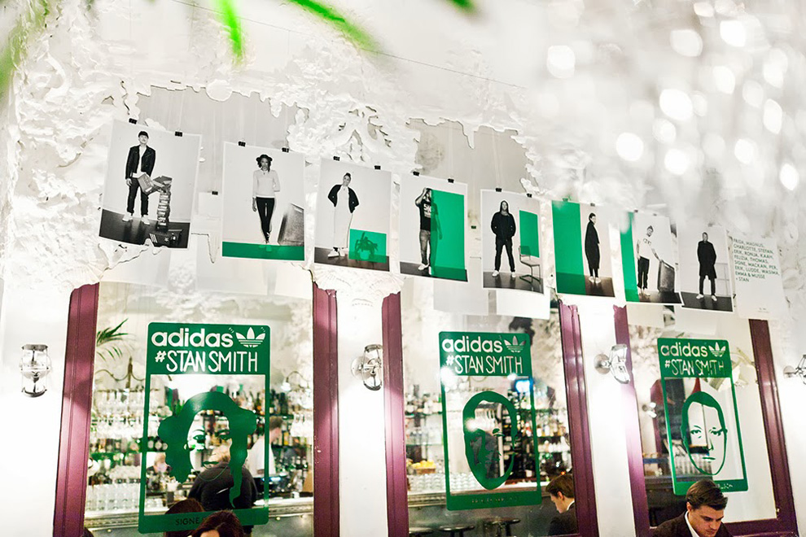
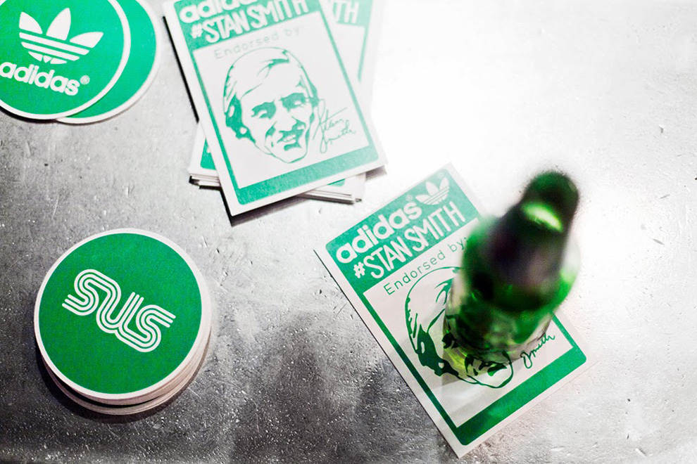
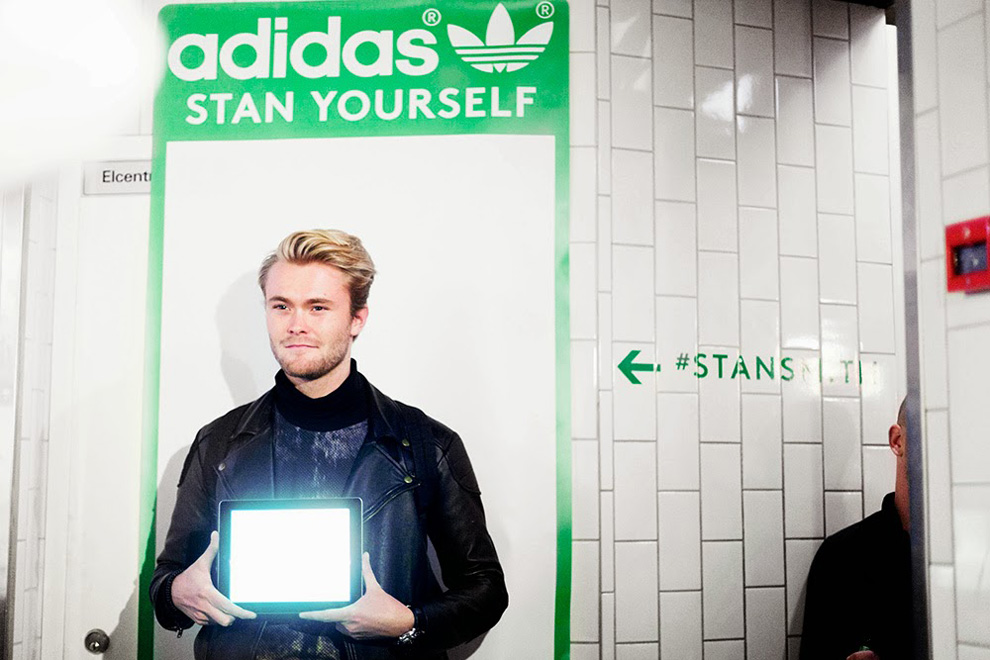
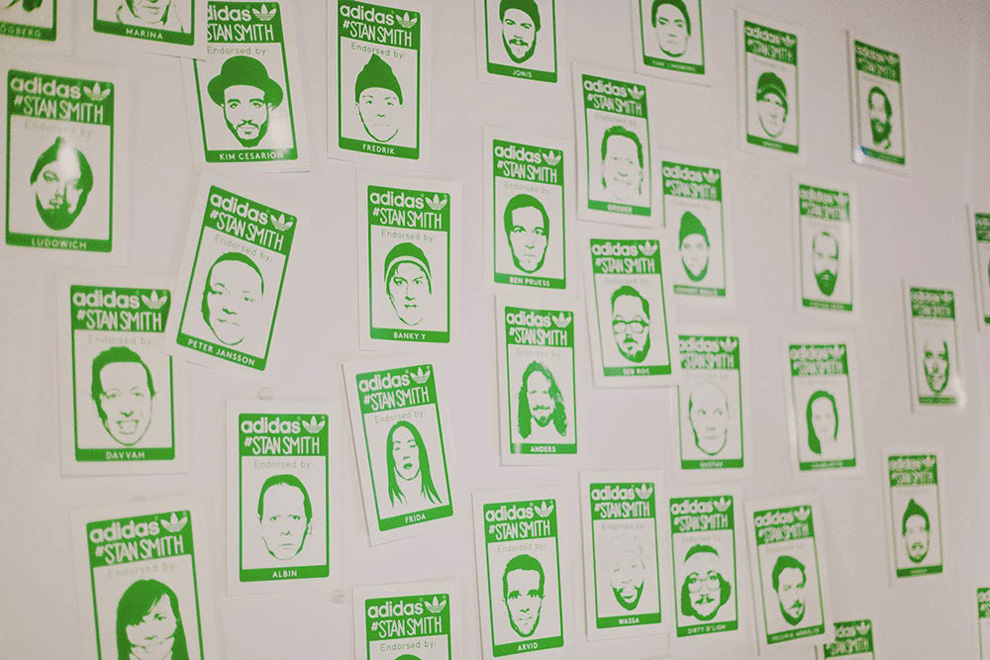
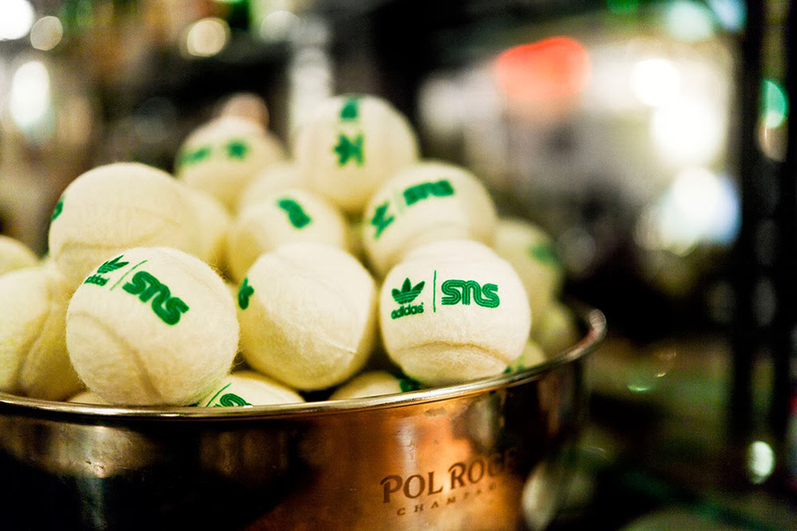

To celebrate the relaunch of the classic Adidas Stan Smith sneaker, a party was held at a nightclub in central Stockholm. Together with the team over at The Viral Company I worked with designing and delivering visual material for the event.




